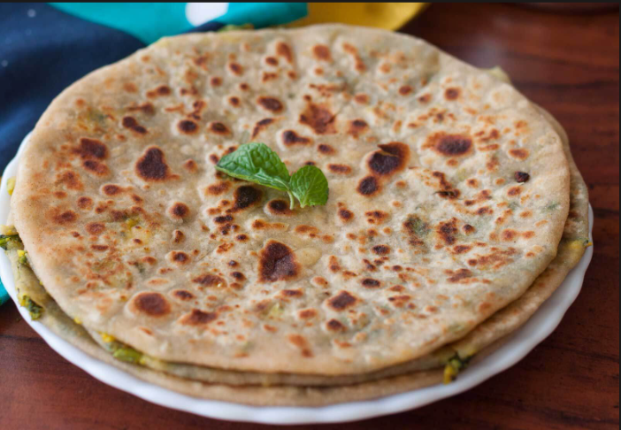

Home Page
Aloo Paratha

Description
Aloo Paratha is a popular North Indian flatbread stuffed with a spiced mashed potato filling, typically served with butter, yogurt, or pickles.
Ingridents
- 3 medium potatoes, peeled and cubed
- 4 teaspoons vegetable oil, divided, or as needed
- ¼ teaspoon cumin seeds
- 2 green chile peppers, minced
- 6 fresh curry leaves
- ½ teaspoon minced fresh ginger
- 1 pinch ground turmeric, or to taste
- salt to taste
- 5 cups whole wheat flour, divided
- 1 ¼ cups water
Directions
-
Place a steamer insert into a saucepan and fill with water to just below the bottom of the steamer. Bring water to a boil. Add potatoes, cover, and steam until tender, 10 to 15 minutes. Remove from the heat.
-
Heat 1 1/2 teaspoons vegetable oil in a medium skillet over medium heat. Add cumin seeds and cook until light brown, 2 to 3 minutes. Add chile peppers, curry leaves, and ginger; cook and stir for about 1 minute. Add potatoes, turmeric, and salt; cook and stir carefully for about 5 minutes.
-
Transfer potatoes to a bowl and allow to cool, about 15 minutes.
-
Place 1/2 cup flour into a shallow bowl. Combine the remaining flour and 1 1/2 teaspoons oil in a large mixing bowl; salt to taste. Mix with your hands while gradually adding water. Knead dough until a smooth ball forms. Divide into 6 evenly round balls.
-
Roll each dough ball into a thick, circular shape. Form the cooled potato mixture into 6 round balls and place a potato ball on top of each dough circle. Fold all the dough sides over the potato filling to cover. Flatten each stuffed dough slightly while dipping both sides into the bowl of flour.
-
Roll each dough to a thin, circular shape and set a few inches apart on parchment paper.
-
Set a large skillet over medium heat and lightly spread with remaining oil. Place a stuffed paratha on the hot skillet and cook for 2 to 3 minutes. Flip over and cook the other side for 2 to 3 minutes. Remove to a serving plate and continue this same process for all the parathas. Serve hot.